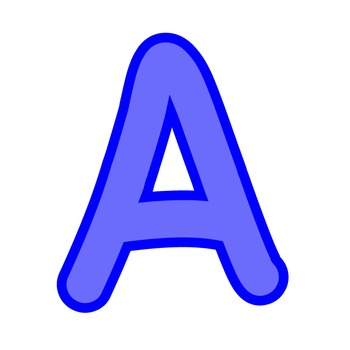

Aspiring eLearning Designer

Hi, my name is Amanda, and I’m studying to be an elearning designer.
I earned my bachelor’s and master’s degrees in English from California State University, Chico.
I am back in school for a second master’s degree in educational technology from California State University,
Los Angeles. Also, I am earning a graduate certificate in serious games and simulations from the University of Missouri.
I’ve worked at Chico State since 2016. First, I was a brand writer and campus editor.
Now, I’m an office manager in the chemistry department. During the 2020–21 COVID-19 lockdown, I saw how chemistry
teachers struggled to find online programs to substitute for in-person activities and lessons. Chemistry is not easy
to teach online. That experience is why I decided to return to school and study educational technology.
I want students and teachers to have easy access to quality elearning and have fun at the same time.
"Read everything. Write anything. Most importantly, wear comfortable shoes." —Amanda Rhine